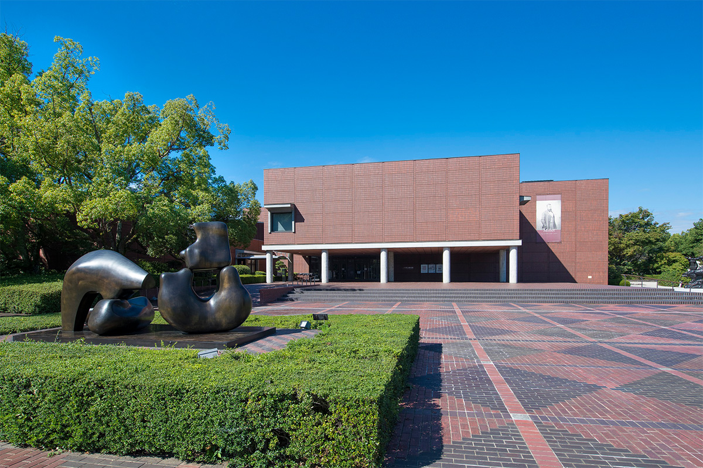
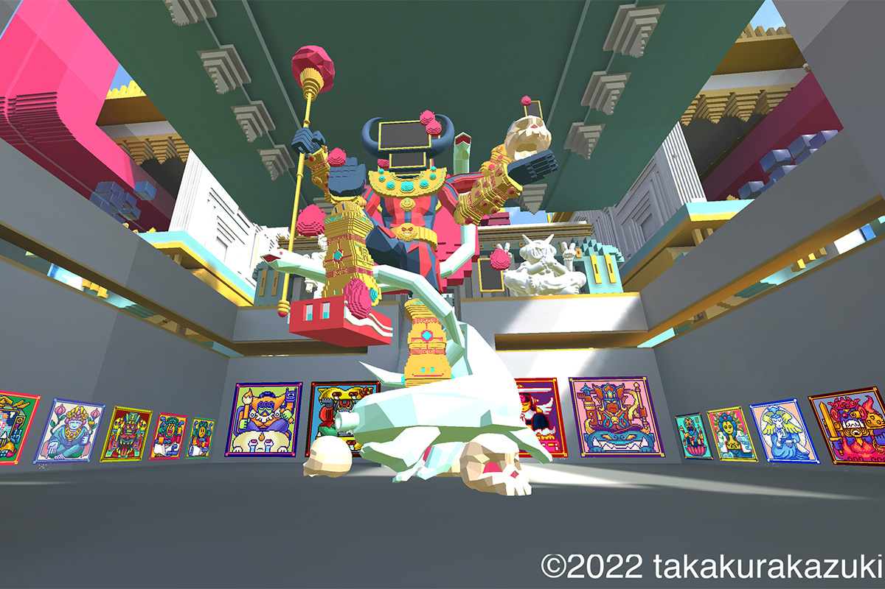
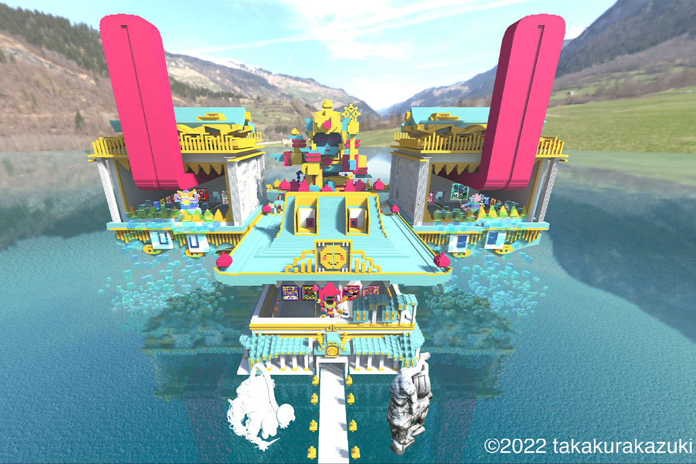
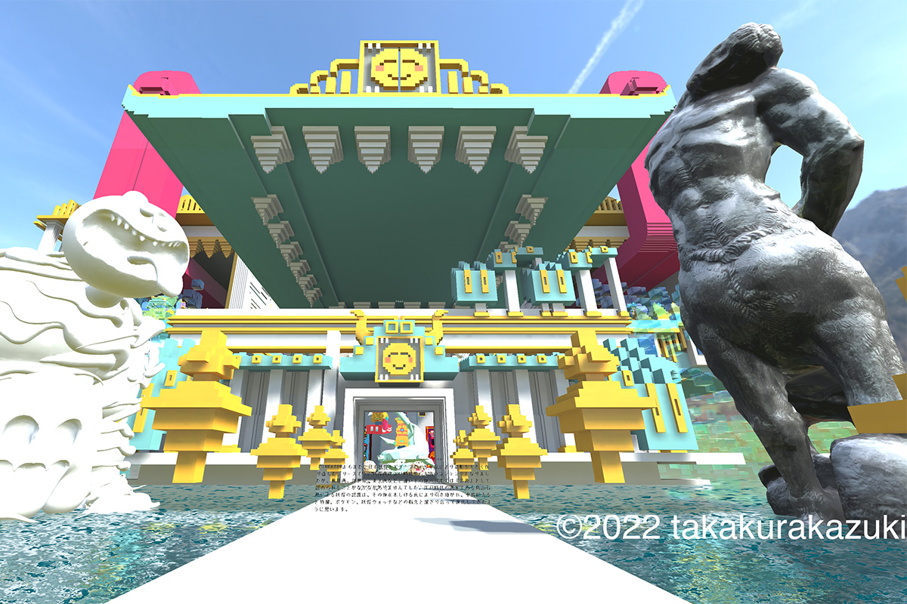
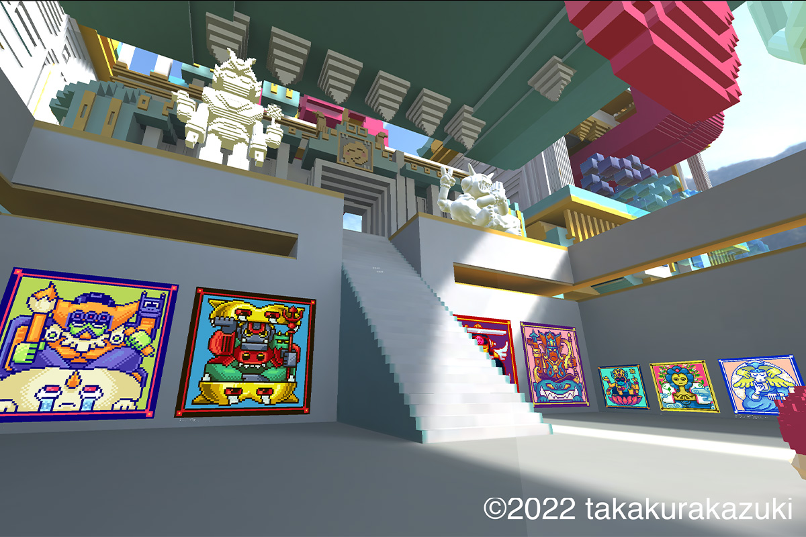

Префектура Яманаси · Кофу · искусство
Музей Милле в Кофу: картины барбизонцев и выставка в метавселенной

В Японии Префектуральный художественный музей Яманаси зовут музеем Милле: здесь хранится много работ французского художника. А в 2022 году музей открыл ещё и виртуальный зал в метавселенной.
Музей
Милле среди зелени
Кофу, столица префектуры Яманаси, окружён горами, а музей стоит в парке «Гэйдзюцу-но мори», что значит «Лес искусств». Его открыли в 1978 году, и с тех пор местные зовут его просто «музеем Милле».
Причина в коллекции. Здесь собрано много работ Жана-Франсуа Милле (1814–1875), французского художника, который почти всю жизнь писал крестьян за работой и стал одним из главных художников барбизонской школы во французской живописи XIX века. В музее хранятся, например, «Сеятель» и «Сбор колосьев, лето».
Музей давно искал способы сделать так, чтобы к искусству могли прийти люди любого возраста, без подготовки, и унести с собой что-то непривычное для обычной жизни. В 2022 году, готовясь к 50-летию в 2028 году, музей объявил, что начинает работу над новой программой развития: сохранить всё, чем он силён как обычный музей, и добавить к этому новые, непривычные для музеев проекты.
Одним из них стал проект в метавселенной. Полностью запустить его собирались в конце февраля 2023 года. В художественной библиотеке музея планировали поставить очки виртуальной реальности, чтобы каждый мог без подготовки заглянуть в виртуальное пространство, а вместе с художниками задумали совместные события.
«Музей это физическое пространство. Когда мы думаем о виртуальном, главный вопрос в том, как связать одно с другим»
хранитель музея
«Слово "метавселенная" знают многие, но очков виртуальной реальности большинство, как и я когда-то, ещё не надевали. Мы хотим через искусство открыть людям всех поколений вход в новый способ смотреть»
хранитель музея
Выставка
Будды из пикселей над горным озером
Перед полным запуском проекта, с 30 ноября 2022 года по 27 февраля 2023 года, в виртуальном зале музея прошла выставка «Дай BUDDHA VERSE», «Великая вселенная Будды». Выставка шла онлайн, вход был бесплатным.

Выставку сделал Кадзуки Такакура, художник родом из префектуры Яманаси, 1987 года рождения. Он окончил магистратуру художественного университета в Токио, преподаёт в художественном университете в Киото и работает арт-директором театральной труппы. В его арсенале трёхмерная графика, пиксельная анимация, 3D-печать, виртуальная реальность и NFT, а темы он берёт из восточной мысли, в последние годы особенно из японского буддизма. На площадке OpenSea у него выходит NFT-серия «BUDDHA VERSE».
Такакура смотрит на ёкаев, духов японского фольклора, и на будд, в которых японцы верят много веков, как на часть «культуры персонажей». И ещё как на что-то очень близкое к цифровым существам: их нельзя потрогать руками. NFT, технология, которая закрепляет подлинность цифрового файла через блокчейн, позволяет хранить его работы в виртуальном мире бесконечно долго. Так они встают в длинный ряд статуй будд и изображений ёкаев, которые люди веками копировали и пересоздавали заново.
Сам выставочный зал тоже создал художник. Посреди озера, окружённого горами, как в Яманаси, вырастает здание, где западный музей смешан с японским храмом, и гость шагает прямо в виртуальный мир.



Будущее
Музей, где интересно
«Как-то в разговоре один художник сказал: "Музей должен быть интересным местом". Эти слова у меня в голове до сих пор»
хранитель музея
«От музея ждут всё больше: пользы для туризма, для местной экономики, для жизни региона. Создавать что-то своё сегодня может каждый, и образовательные программы музея тоже будут меняться. Мы хотим укреплять то, на чём музей стоял всегда: коллекцию, которая говорит о сельской жизни и природе, и при этом вместе с посетителями пробовать новое. Так мы надеемся найти путь к музею, где по-настоящему интересно»
хранитель музея
Проект в метавселенной задумывался как эксперимент, чтобы ответить на запросы самых разных посетителей, и в 2023 году за ним с интересом следили музеи других префектур.
Префектуральный художественный музей Яманаси
- Адрес
- префектура Яманаси, Кофу, Кугава, 1-4-27
- Телефон
- +81 55-228-3322
- Часы работы
- 9:00–17:00, вход до 16:30
- Выходные
- понедельник (если это праздник, то следующий день), день после праздника (в воскресенье музей открыт), новогодние праздники, возможны изменения
Фото: изображения виртуальной выставки © 2022 Кадзуки Такакура.